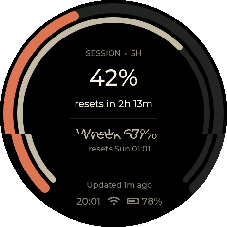
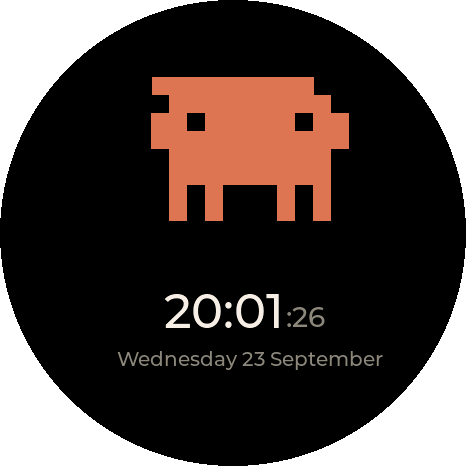
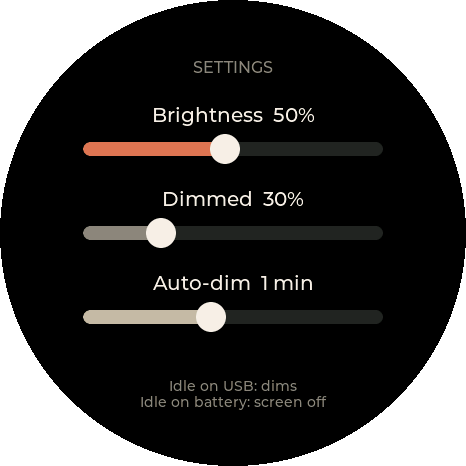
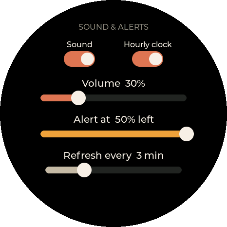
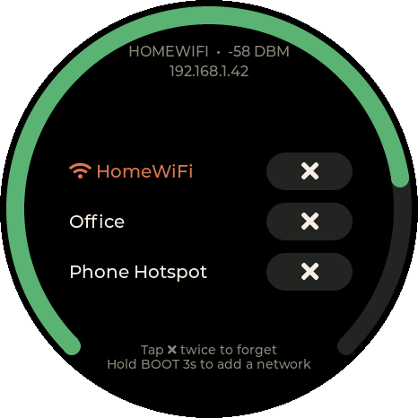
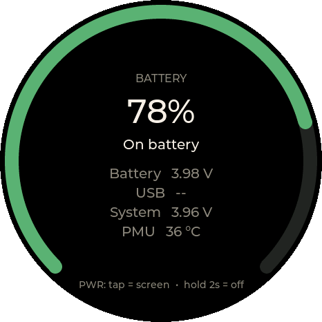
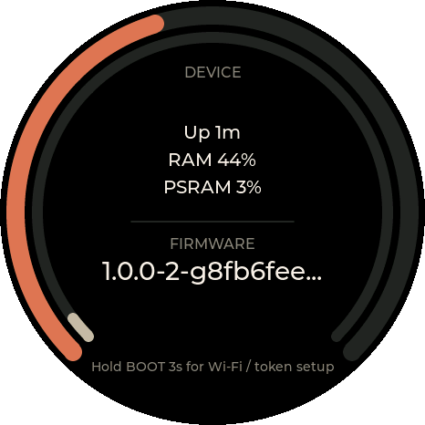

Claude Gadget
A small round desk display showing your Claude Pro/Max plan usage: the 5-hour session and weekly limits, when they reset, and an alert when you're running low.
For the Waveshare ESP32-S3-Touch-AMOLED-1.75C. Firmware {{VERSION}}.

Install
Desktop Chrome or Edge · USB-C data cable · Get the board
- Plug the board into your computer and click Install firmware.
- Pick the port (usually "USB JTAG/serial debug unit").
- First install: choose Erase. Updating: don't erase, and your Wi-Fi, token and settings are kept.
If no port appears, start the board in download mode: hold PWR 6 s to turn it off, then hold BOOT and press PWR to power on, release BOOT, and try again.
First-time setup
- Get a token: install Claude Code and run
claude setup-token. It prints a long-lived token startingsk-ant-oat01-. - The gadget shows a QR code. Scan it or join the Claude-Gadget-XXXX Wi-Fi network; the setup page opens (otherwise browse to
192.168.4.1). - Choose your Wi-Fi, paste the token, check the timezone, and save.
Usage appears a few seconds later. See the README for controls and settings.
Screens






Controls
| PWR tap | Screen on / off |
| PWR hold 2 s | Power off. Press PWR to power on. |
| BOOT tap | Refresh usage now |
| BOOT hold 3 s | Open the setup hotspot (add Wi-Fi, change token or timezone) |
| Tap screen | Wake the screen when it's off |
| Swipe | Right from Usage for the clock; left for settings, Wi-Fi, battery and device pages |